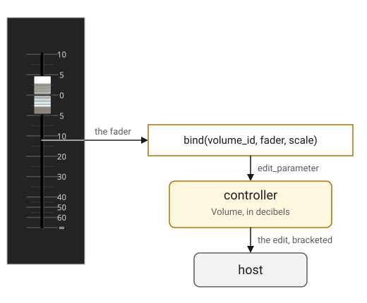
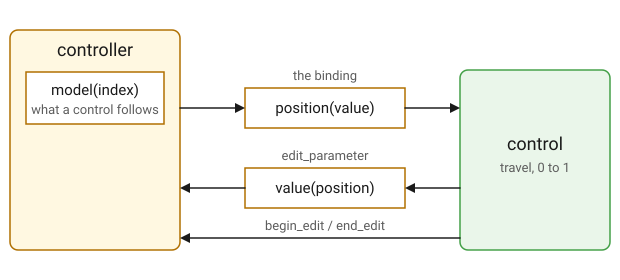
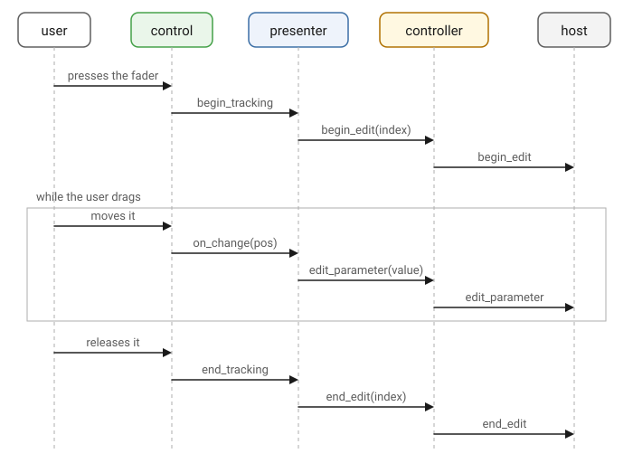
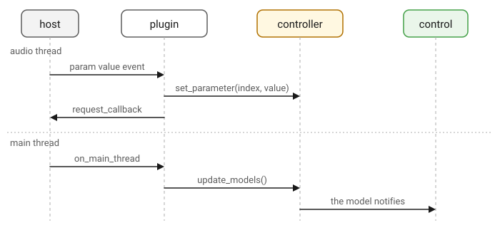
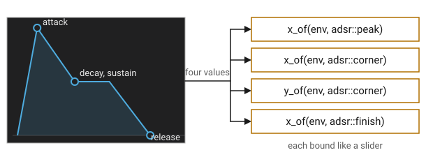
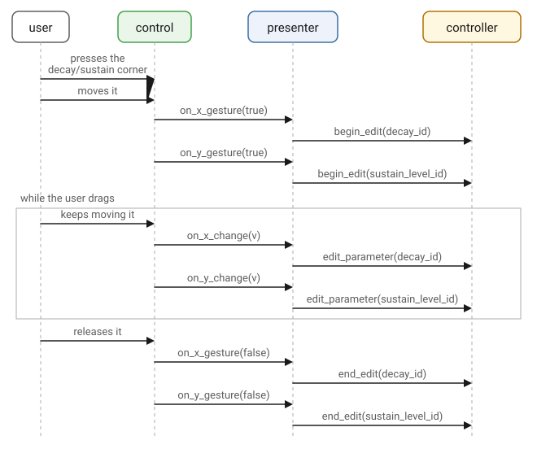
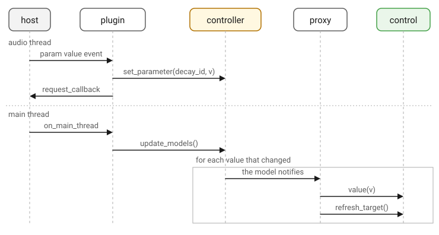

Presenter
Overview
A presenter is a plugin’s editor. It builds the GUI (element tree; see
below) when the host opens a window, binds each control to a parameter,
and owns the view that tree lives in. A plugin that returns nullptr from
make_presenter is headless: the host gets no editor, and everything else
about the plugin works as before.
An element is Elements' unit of
interface: anything that sizes itself, draws and takes a click, from a
box to a slider. They compose by holding each other, and that is what
makes a tree: a margin holds a fader, a tile holds a row of them, and the
view holds the roots, one per layer, the background last.
An element carries no coordinates. The tree is walked instead: the limits come up from the leaves, layout and draw go back down, working out each element’s bounds on the way, and a click is hit-tested down the same path. That is what makes elements light enough to be built afresh for every editor, and why the content’s limits are what bound the window.
Presenter Example
A presenter subclass implements on_attach, and the base does the rest: it
makes the view, takes the keys every plugin shares, keeps the editor inside
the content’s limits, carries the scale, and provides the header, which a
presenter calls make_header for and places at the top. This is the whole
of the gain example’s presenter, which places no header:
class gain_presenter : public q_plug::presenter
{
public:
gain_presenter(gain_controller& ctl);
protected:
void on_attach(elements::view& view_) override;
private:
gain_controller& _ctl;
};on_attach is called with the freshly made view. It builds the content and
binds it:
void gain_presenter::on_attach(elements::view& view_)
{
// A fader: the decibel taper of a console, marked and labeled at the
// usual points over the parameter's range.
auto const& param = _ctl.volume_param();
db_scale scale{param.min(), param.max()};
auto track = slider_labels_db<10>(
slider_marks_db<40>(basic_track<5, true>(), scale),
0.8, // Label font size (relative)
scale
);
auto fader = share(
slider(align_center(image{"slider-white.png", 1.0/4}), track)
);
bind(gain_controller::volume_id, fader, scale);
view_.content(
align_center(vmargin({20, 20}, hold(fader))),
box(bkd_color)
);
}That is the whole editor: one control, bound to one parameter.

The presenter holds a reference to its own controller, given to it when the plugin makes the three parts. It holds no reference to the processor. Everything it reads and everything it changes goes through the controller.
Binding a Control

bind is the one call that ties a control to a parameter, and it makes
three connections at once: the control shows the parameter, what the user
does to the control reaches the host as an edit, and a drag on it is
bracketed as one gesture.
The control takes the parameter’s current value as it is bound, and follows the controller's model for as long as the view lives.
Any number of controls may share a parameter. Each is bound in its own right, and all of them follow the model, so a dial and a text box showing the same value stay together.
A binding takes the control’s own callback for itself, its
on_change, or a button’s on_click. A plugin that has to act when a
parameter moves does it on the controller, by overriding edit_parameter
there, and not by hooking the control.
|
When the User Moves the Control
The control hands out its travel, the binding turns it back into a value,
and edit_parameter carries it to the controller and on to the host.
A drag is bracketed. begin_edit goes out as the drag starts and
end_edit as it ends, so the host records one movement rather than the
hundred values that passed through it. All three go out on the main thread,
in the order the user made them:

When the Host Moves the Parameter
The other direction needs nothing of the plugin at all. The host’s value arrives on the audio thread and is stored there; the models are brought up to date on the main thread, and every control bound to one follows and is redrawn.

Only the models whose value has actually changed are assigned, so a host
that echoes a value back in the middle of a drag does not fight the control
the user is holding. The controller describes where a parameter is kept
and what update_models does.
The Mapping
The mapping is what carries the control’s travel, 0 to 1, to the
parameter’s value and back: position(value) one way and value(position)
the other.
scale is gain’s, and it is an
Elements `db_scale over the
parameter’s own range:
auto const& param = _ctl.volume_param();
db_scale scale{param.min(), param.max()};That is the taper of a console fader, and it is not the parameter’s. The parameter is linear in decibels, while the fader gives the range around unity the room to be played and compresses the quiet end, where a decibel matters less.
Anything with the same two functions will do, and a parameter is itself
one, over its own range and taper. That is what a control is usually bound
with, needing nothing but the parameter it belongs to. gain is the
exception: its fader needs a taper the parameter does not have.
Controls With Several Values
bind takes a control with one value: one setter and one callback. An
element that carries several has neither in that form. It has a setter and
a callback per value, dressed as a control of its own:
Elements' bindable_proxy does that
for any element, and its curve_editor hands out each axis of each of
its points that way, through x_of and y_of.
gain has no such control, so the rest of this section works from
anna_4, the fourth stage of the virtual analog synth: a voice through
a filter and a chorus, with an envelope for the amplifier and another for
the filter. Its envelopes are the subject here. Each is a curve editor,
drawn as one shape whose corners are dragged, rather than four sliders.

Three corners carry the four values: the peak’s distance from the start is the attack, the tail’s end’s from the plateau is the release, and the corner between them is both the decay, by its distance, and the sustain level, by its height. The editor hands each axis of a point out as a proxy, and the presenter binds it with a mapping:
bind(attack, x_of(env, adsr::peak), adsr::stage{¶ms[attack]});x_of(env, i) is a curve_value: its value(v) sets that axis of that
point, its on_change is the callback the binding writes to, and its
on_gesture the one the editor calls as a drag along that axis begins
and ends. The mapping carries the parameter’s travel to the point’s
unit: stage makes a time a share of its stage’s width. With those, an
envelope is bound four times, each similar to how a slider is bound:
auto link_envelope =
[&](auto env, int attack, int decay, int sustain, int release)
{
bind(attack, x_of(env, adsr::peak), adsr::stage{¶ms[attack]});
bind(decay, x_of(env, adsr::corner), adsr::stage{¶ms[decay]});
link(sustain, y_of(env, adsr::corner));
link(sustain, y_of(env, adsr::plateau));
bind(release, x_of(env, adsr::finish), adsr::stage{¶ms[release]});
};A proxy is not in the element tree, so the presenter keeps every proxy it binds for as long as the view lives; nothing else would. It reaches its editor weakly, as the binder reaches every control, and a point’s place is in the editor’s unit square, never the parameter’s own units: the mapping and each parameter’s taper turn it into what it means, milliseconds for the three times and a percentage for the sustain level. A point that follows another, as the plateau follows the corner, is bound to the same parameter, and a host moving it moves both.
A drag then moves every value the corner carries, each as an edit of its own:

A gesture on an axis begins the first time the drag changes it and ends with the release, so the host records two movements rather than one, and the editor reports a value only when it has actually changed. From the controller on, the path is the one the sections above describe. A slider announces its drag through the view, which the presenter hooks in one place; a proxy is not in the tree to announce anything, so its own gesture callback is hooked instead.
The host’s automation arrives the same way it does for a slider, and ends at the proxy:

The proxy hands the value to the axis it stands for, so only that one
value of the editor is written. Outside the tree, it has nothing of its
own to redraw: refresh_target names the element it forwards to, and that
is what the binding refreshes. A host moving two of the editor’s
parameters notifies two models, and each writes its own value into the
same shape.
The View
The view is dynamically created only as needed. It exists only while the host has an editor open and every step of its life is on the main thread. When the user wants to open a view (e.g. in a DAW), the presenter creates it and builds its content, then attaches it into the host’s window. When the user closes the plugin window, the presenter takes it down again.
| Where the platform allows a view before there is a window to put it in, as Cocoa does, the view is made as soon as the editor is created, so the content is built and measured before the window arrives. Where it does not, as on Windows and X11, the view waits for the parent. |
The view, in its entirety, is destructed once the editor window is closed: the bindings come off their models, the gestures and the proxies are dropped, and the elements are destroyed. The parameters and their models belong to the controller and are untouched, so an editor closed and opened again comes back on the same values.
Size and Scale
The editor opens at the size the plugin declares, info().view_size,
taken at the scale the last session was left at. The content’s own limits
bound it from then on, and the host is given those limits before it sizes
anything: a fixed layout refuses every size but its own. When the limits
change, the presenter calls request_resize for a window to match. The
host may set a size in return, or leave the window as it is.
The editor’s scale is owned by the controller, so a reopened editor and a restored session both come back at the scale they were left at. Zooming is the same in every plugin: the action key, Command on macOS and Control elsewhere, with plus, minus and zero, the same three in the View menu, and the buttons at the right of the header. The stops are a tenth apart, from half size to double. The zoom page covers the stops, where the scale is kept, and how a size in logical units becomes the host’s own.
The Header
make_header builds the row along the top of the editor: a main menu at
the left, the preset the plugin is on beside it, and at the right the zoom
buttons and a logo, if there is one. Everything on it works through the
controller, so there is nothing to wire. A plugin calls it from
on_attach and puts it at the top of its content: anna_5 holds it
first in the vtile that carries its panels.

The header is built by calling these virtual functions:
-
make_main_menu -
make_preset_menu -
header_items -
make_zoom_buttons -
logo
A plugin customizes the header by overriding one of them. The header page describes each part, the standard menu items, and what an override is given.
Declaration
struct view_sink
{
virtual ~view_sink() = default;
virtual bool request_resize(elements::extent size) = 0;
};
class presenter
{
public:
using element_ptr = elements::element_ptr;
presenter(controller& ctl);
virtual ~presenter();
template <typename Control, typename Mapping>
void bind(int index, std::shared_ptr<Control> control
, Mapping mapping);
bool create(elements::extent size);
bool attach(void* parent, elements::extent size);
void detach();
void show(bool show);
elements::extent size() const;
elements::view_limits limits() const;
bool resize(elements::extent size);
bool request_resize(elements::extent size);
void zoom(float scale);
float zoom() const;
void zoom_in();
void zoom_out();
void actual_size();
static constexpr float zoom_min = 0.5f;
static constexpr float zoom_max = 2.0f;
void sink(view_sink& s);
elements::view* view() const;
controller& ctrl() const;
float pixel_scale() const;
protected:
virtual void on_attach(elements::view& view_) {}
virtual void on_detach() {}
virtual element_ptr make_header();
virtual element_ptr make_main_menu();
virtual element_ptr make_preset_menu();
virtual element_ptr make_zoom_buttons();
virtual element_ptr logo() { return nullptr; }
using row = std::vector<element_ptr>;
virtual void header_items(row& items) {}
using menu = std::vector<element_ptr>;
virtual void preset_menu_items(menu& items);
virtual void view_menu_items(menu& items);
virtual void plugin_menu_items(menu& items) {}
virtual void about_menu_items(menu& items);
};
using presenter_ptr = std::unique_ptr<presenter>;Expressions
Notation
p-
Object of a type derived from
presenter. ctl-
Object of a type derived from
controller. index-
An
int, a parameter’s index inctl.parameters(). control-
A
std::shared_ptrto an Elements control, or to abindable_proxy. mapping-
An object with
position(value)andvalue(position). view_-
An
elements::view&. parent-
The host’s window, as a
void*. size-
Object of type
elements::extent. scale-
A
float, the editor’s scale. show-
A
bool. s-
Object of a type derived from
view_sink. items-
A
presenter::row&or apresenter::menu&.
Construction
| Expression | Semantics | Return Type |
|---|---|---|
|
Construct a presenter over a controller. |
|
|
The controller it was made with. |
|
|
The live view, null when there is none. |
|
|
Hand the presenter the sink its requests to the host go to. |
|
plugin makes the controller first and hands it to make_presenter, then
installs itself as the sink. A plugin’s presenter keeps a reference of its
own type, so it reads its parameters through its own accessors rather than
by index.
Building the Editor
| Expression | Semantics |
|---|---|
|
Build the content and bind it. Called with the freshly made view. Empty in the base. |
|
The view is going. Empty in the base. |
|
Bind a control to a parameter. |
The presenter subclass must implement the on_attach member function. It
is called on the main thread, once per view, before the view is sized, and
the view it is given is the one p.view() returns for as long as that
editor is open.
bind needs the view, so it is called from on_attach and nowhere else.
The control shows the parameter from that moment, and what the user does to
it reaches the host as an edit, bracketed as one gesture. mapping carries
the control’s travel, 0 to 1, to the parameter’s value and back.
on_attach is called again for every editor the host opens. Build
the content there and keep nothing between one view and the next: the
elements, the bindings and the gestures all go with the view.
|
The View
| Expression | Semantics | Return Type |
|---|---|---|
|
Make the view and build its content, where it may exist before there is a window. |
|
|
Put the view into the host’s window, making it first if it does not exist yet. |
|
|
Take the view down. |
|
|
The host is showing or hiding the editor. |
|
A plugin never calls these four. The host’s editor requests arrive
through base_plugin, the class that adapts the plugin to CLAP, and
plugin, which derives from it, passes each one to the presenter. The size it passes is always info().view_size, the
size the plugin declared, at a scale of one. The view is constructed at the
saved scale, so the editor opens at that declared size scaled.
create makes the view early where the platform allows it. Otherwise, it
does nothing and still returns true; attach makes the view once the
window exists. detach runs from the destructor as well as from the host,
so a presenter destroyed while its editor is open takes the view down with
it.
Size
| Expression | Semantics | Return Type |
|---|---|---|
|
The view’s size, zero without a view. |
|
|
The content’s limits.
|
|
|
Size the view, within the limits. False if the size requested is not the size it got. |
|
|
Request a size from the host. False if the host declines it or there is no sink. |
|
The limits determine the minimum and maximum size of the view. The limits
are read before a window is sized. A size beyond the limits is clamped to
the nearest allowed size, and resize returns false to report it. A fixed
layout allows one size only, so every other size is refused that way.
resize is the host setting the view’s size. request_resize runs in the
opposite direction: the plugin requests a size, which the host may or may
not permit. The presenter issues this request itself when the content’s
limits change, so that the window keeps up with an editor whose layout has
grown or shrunk. A plugin seldom needs to call it.
|
A window the user can expand or shrink is one whose content is resizable:
an element whose minimum
limits
are below its maximum in x or y. Every element starts with An editor left unconstrained reports a maximum of
|
Scale
zoom, zoom_in, zoom_out, actual_size, zoom_min and zoom_max, the
user’s scale, and pixel_scale, the display’s, are covered in zoom.
The Header
make_header, make_main_menu, make_preset_menu, make_zoom_buttons,
logo, header_items and the four _menu_items functions are covered in
header, with a worked example of a plugin adding to the row and to the
menu.